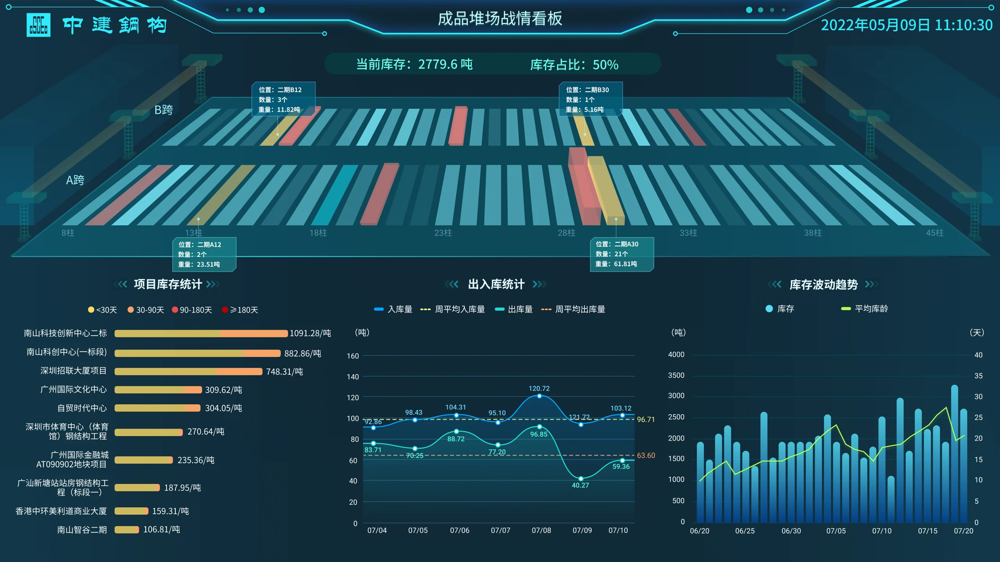
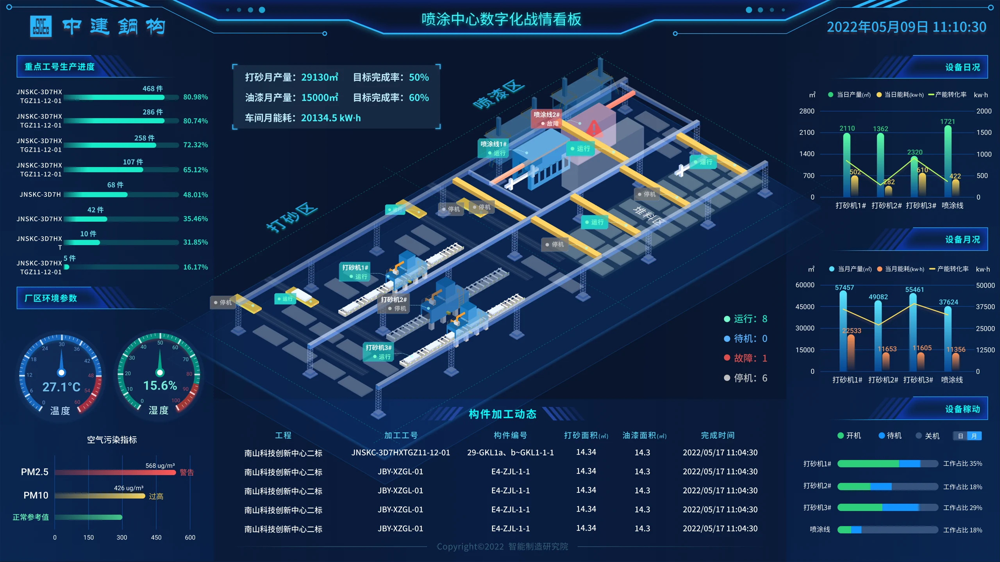
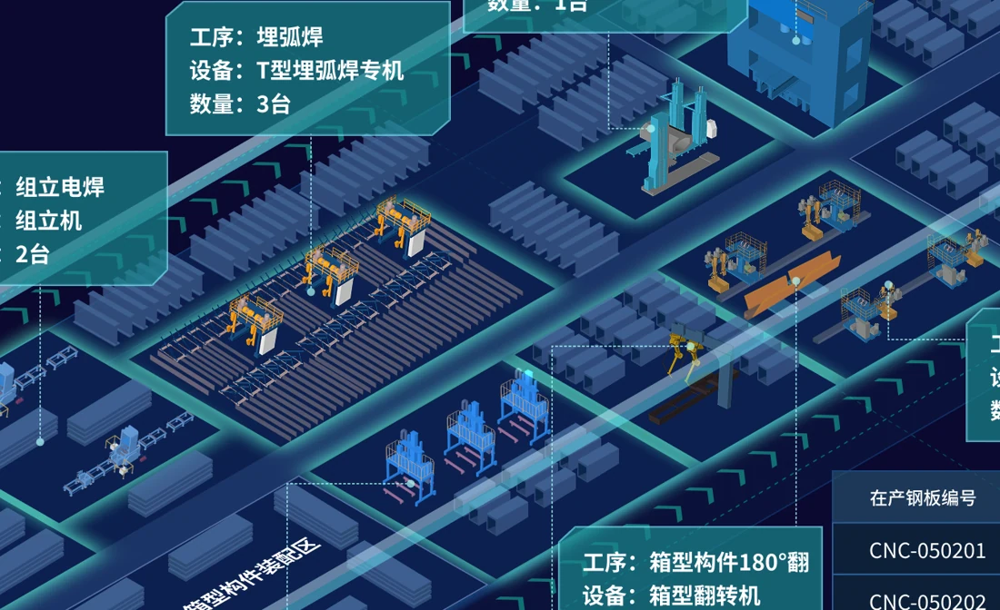

让信息易读
固定设备位置，方便持续查看进度与状态，也便于扩展到其他产线。
INDUSTRIAL DATA / ISOMETRIC DESIGN
将设备位置、生产进度与运行状态，放在同一张看板上。
让现场更直观，判断更高效。


一屏看清现场布局、任务进度与异常位置。
保留现场关系，
突出关键信息。
工厂既有复杂的设备布局，也有大量生产数据。看板需要把两者连起来，让用户知道数据来自哪里。
我用简化的立体图展示现场，将状态标在对应设备上，再用图表呈现进度与变化。
2.5D 用固定视角看数据；3D 可旋转、缩放，适合查看空间细节。
固定设备位置，方便持续查看进度与状态，也便于扩展到其他产线。
通过旋转、缩放查看园区和设备，适合了解布局与空间细节。
查看 3D 设计专题 ↗表达方式按使用需求选择：持续看数据，或深入看空间。
先确认谁在看、看什么、需要做什么判断。
场景 / 指标 / 优先级按生产顺序安排区域，让流程一目了然。
区域 / 流程 / 查看顺序保留设备的主要外形，减少无关细节。
外形 / 结构 / 特征统一视角与比例，呈现设备之间的位置关系。
视角 / 比例 / 统一图形在设备旁标明运行、待机或故障状态。
状态 / 文字 / 对应设备检查远处是否看得清，动效是否影响阅读。
阅读 / 动效 / 校对保留关键外形，看清设备用途与前后衔接。

突出工作部位与物料方向，方便识别设备。
弱化纹理与装饰，让生产信息更突出。
同类设备保持一致，新增产线也容易读懂。
点击查看：现场布局、设备、数据标注。
数据贴近对应设备，文字保持水平，便于阅读。
生产看流程，仓储看位置，设备看状态。
中间看产线，两侧看计划与结果，下方看明细。
上方展示存放位置，下方查看库存与出入库变化。
地图看设备分布，侧栏看选中设备的状态。
找到设备 → 判断状态 → 对比数据 → 查看明细
状态标在设备旁，结合进度与能耗定位异常。
按处理、喷漆、存放划分区域。
设备旁显示运行、停机或故障。
对照产量、能耗与工作时长，了解设备表现。
颜色帮助发现变化，文字与图标确认含义，避免误判。
轻微动效表示设备正在工作。
只强调异常设备，其余区域保持稳定，方便继续查看数据。
沿生产流程，查看任务分布与各班组进度。
设备按生产顺序排列，下方对比各班组的产量与完成率。
用颜色区分任务量，并配上图例，避免与故障提示混淆。
三段产品录屏，展示设备状态、任务标注与数据更新。
标签在设备旁更新，固定布局方便持续跟踪生产情况。
信息位置固定，便于查找。
动效提示状态与数据变化。
突出重点，减少辅助运动。
按区域查找成品，掌握库存与出入库变化。
用统一编号准确定位存放位置。
在存放位置旁显示数量与重量。
用统计图查看存放时长与库存变化。
设备、文字与图表保持一致，不同看板突出各自的核心信息。
深色背景衬托数据，亮色用于重点与异常，图例说明颜色含义。
数字突出，单位紧随；标题与说明按重要程度区分。
条形图看对比，折线图看变化，环形图看比例。
标注指向设备，密集区域错开显示，避免遮挡。
桥梁与箱型产线使用一致的布局，按实际流程调整设备与数据。
按原料、焊接、除锈等步骤排列设备，说明名称与数量。
分别展示计划、产量、能耗与质量，明细表补充每台设备的生产记录。
按产线调整设备与标注，保留熟悉的信息位置。
一张图展示各区域的存放位置，两侧查看库存与出入库变化。
用名称与间隔区分区域，方便定位。
先看库存总量与存放时间，再查看具体位置。
分别展示入库与出库变化，并与平均值对照。
两段局部录屏，展示状态提示与设备信息更新。
只在对应设备旁突出变化，避免整屏闪动。
标签显示生产区域、产量与待完成任务，位置保持稳定。
查看设备运行与风险位置，快速找到关注重点。
先看设备总量与异常数量，再选择地区查看企业和设备详情。
地图标出异常位置，列表说明具体状态。
从产线到区域监控，位置、状态与详情始终对应。
在实际屏幕上验证清晰度与动态阅读效果。
同类设备保持一致，不同设备有清楚的区别。
单位与统计时间标明，避免混用。
故障、离线、停机与无数据分别提示。
控制刷新与切换频率，保留足够的查看时间。
远处看重点，近处看明细，按实际屏幕调整字号。
用简化的立体场景，连接现场位置与生产数据。
让设备易识别、流程易理解、异常易发现。
统一的设计规则，也适用于不同产线。